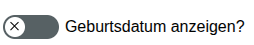
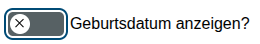
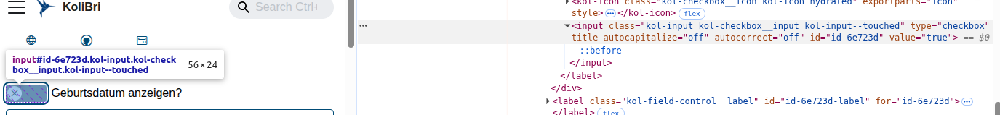

"KoliBri ist für die Barrierefreiheit, wie ein Thermomix® für das Kochen"
<kol-input-checkbox _variant="switch"
_label="Geburtsdatum anzeigen?"></kol-input-checkbox>



- Web Components (Shadow-Root)
- Bridges: Angular, React, Preact, Vue, Vaadin und Solid
- KoliBri (Komponentenbibliothek für die Barrierefreiheit)
- https://public-ui.github.io/
- Open Source - EUROPEAN UNION PUBLIC LICENCE
- Maintainer: itzbund Informationstechnikzentrum Bund, deutsche Bundesbehörde, die für die Bereitstellung von IT-Dienstleistungen für die Bundesverwaltung zuständig ist
- focus (style and steuerung)
- Kontraste
- Skalierbarkeit
- semantic HTML structure, meaningful elements
Einbindung
import { register } from '@public-ui/components';
import { defineCustomElements } from '@public-ui/components/dist/loader';
import { DEFAULT } from '@public-ui/themes';
register(DEFAULT, defineCustomElements).catch(console.warn);
styles sind in js (unabhänning von äußeren css), Icon-Sets müssen seperat eingebunden werden
<head>
<meta charset="utf-8" />
<title>KoliBri Demo</title>
<meta name="viewport" content="width=device-width, initial-scale=1.0">
</head>
<body>
<script type="module">
import { register } from 'https://unpkg.com/@public-ui/components/dist/esm/index.js';
import { defineCustomElements } from 'https://unpkg.com/@public-ui/components/dist/loader/index.js';
import { DEFAULT } from 'https://unpkg.com/@public-ui/theme-default/dist/index.mjs';
register(DEFAULT, defineCustomElements).catch(console.warn);
</script>
</body>